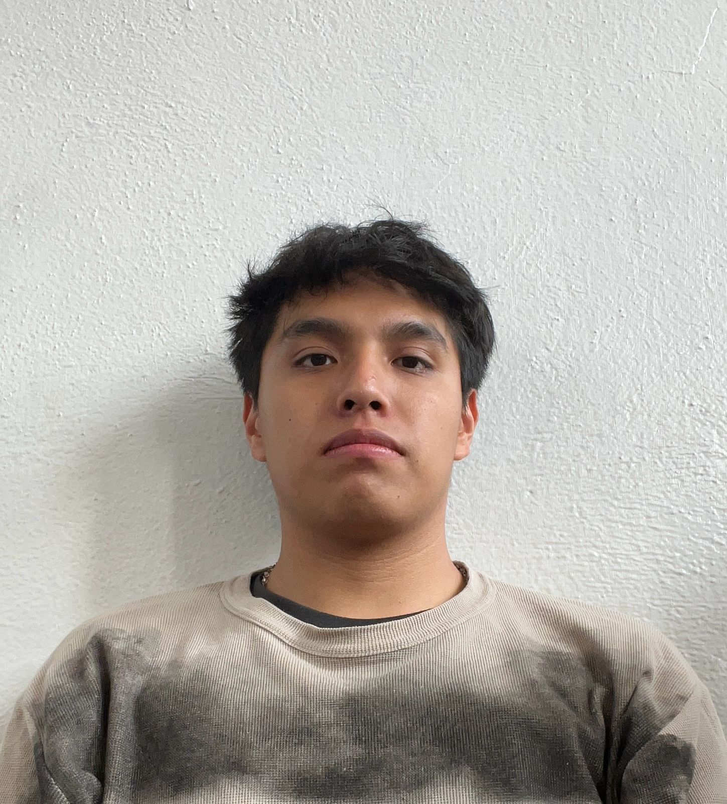

Portafolio de Actividades
Introduccion a Ing. Mecatrónica
Departamento de Ciencias e Ingenierías | Universidad Iberoamericana Puebla, México.
Titulo de la practica de laboratorio


- Resumen -
En este proyecto se diseñó y construyó un brazo robótico con estructura de MDF, controlado por Arduino y servomotores. Su programación permitió realizar movimientos precisos, tanto de forma manual mediante potenciómetros como de manera automatizada. Este trabajo representa una introducción práctica a la aplicación de la mecatrónica en sistemas de robótica y automatización.
- Introducción -
Esta práctica se enfocó en el diseño y construcción de un brazo robótico usando MDF, un material fácil de trabajar. El brazo incorpora varios grados de libertad gracias a los servomotores, que permiten mover sus articulaciones con precisión. El sistema fue controlado por una placa Arduino UNO, que interpreta las señales de potenciómetros manipulados por el usuario. Estos actúan como una interfaz manual, permitiendo controlar el movimiento del brazo en tiempo real de forma intuitiva.
- Materiales -
• Placa Arduino Uno
• Mdf
• tornillos
• Cables de conexión, jumpers
• Protoboard
• Servomotores
• Fuente de alimentación
- Desarrollo -
La estructura del brazo robótico fue diseñada en SolidWorks, lo que permitió visualizar y ajustar cada pieza en 3D antes de su fabricación. Las partes fueron luego cortadas en MDF de 3 mm, un material accesible y fácil de manipular, ideal para construir prototipos. El diseño se basó en modelos analizados previamente en clase, los cuales sirvieron de guía para definir dimensiones, grados de libertad y la ubicación de los servomotores. Esto facilitó la creación de una estructura funcional alineada con los objetivos del proyecto.
Simulación
Antes de proceder con la construcción física del brazo robótico, se llevó a cabo una simulación del sistema utilizando plataformas como Tinkercad o Fusion 360. Estas herramientas permitieron validar tanto el diseño mecánico como el funcionamiento del código de control de los servomotores, asegurando que las articulaciones respondieran correctamente a las señales enviadas por el microcontrolador.

Diseño
El diseño del brazo robótico se planificó cuidadosamente para ubicar los servomotores y los componentes más pesados cerca de la base. Esta disposición estratégica del peso mejora la estabilidad general de la estructura y reduce el esfuerzo que deben realizar los motores durante el movimiento.
Construcción
La construcción del brazo robótico se llevó a cabo en varias etapas importantes. En primer lugar, se cortaron las piezas de MDF necesarias para la estructura, las cuales fueron ensambladas usando tornillos, lo que permitió una unión firme y ajustable. Luego, se procedió a realizar las conexiones electrónicas, uniendo los servomotores a los pines digitales del Arduino UNO y los potenciómetros a las entradas analógicas correspondientes. Una vez finalizado el ensamblaje físico y las conexiones, se cargó al microcontrolador el código necesario para interpretar las señales de los potenciómetros y controlar el movimiento de los servos. Se realizaron pruebas iniciales para evaluar el funcionamiento del sistema, y tras recibir retroalimentación del profesor, se identificaron áreas de mejora. Esto llevó a realizar ajustes en el diseño, incluyendo el recorte de nuevas piezas en MDF, lo que resultó en una estructura más robusta y un mejor rendimiento general del brazo robótico.
- Resultados -
Este proyecto representa una base sólida para avanzar en el desarrollo de sistemas robóticos más complejos. A partir de esta experiencia, es posible explorar nuevas áreas dentro de la ingeniería mecatrónica, como la visión artificial, la inteligencia artificial aplicada al control de movimientos y la automatización de procesos industriales.
- Conclusiones -
Este proyecto permitió construir un brazo robótico funcional, controlado por Arduino y potenciómetros, sentando una base sólida para futuros desarrollos en robótica y automatización.